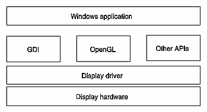

The technical articles OpenGL I: QuickStart and Introducing the OpenGL Interface (both available online from Microsoft) explain in some detail how an OpenGL program fits inside a Windows environment. (See "Background Reading" for bibliographical information.) This chapter provides only minimal introductory information. Figure 1-1 illustrates the relation between OpenGL and GDI, the Windows graphics interface. The rest of the section first provides an Architectural Overview of Windows and OpenGL, then briefly defines OpenGL and Windows Terminology used in the rest of this document.
As you can see in Figure 1-1, OpenGL uses the display driver, which directly interacts with the display hardware. Your Windows application uses OpenGL just as it would use GDI or another applications programmer interface (API).

Figure 1-1 : How OpenGL Fits Into the Windows Environment
GDI and Device Contexts--GDI is the original Windows 2D graphics interface. GDI is capable of drawing to the screen, to memory, to printers, and so on. GDI makes this possible using a Device Context (DC). All GDI calls pass through a DC and the DC knows how to render to that device.
Rendering Contexts--A rendering context (RC) is bound to a DC. An RC in an OpenGL program plays the same role that a DC plays in a GDI program. For GDI, the DC is, in part, a repository of state variables--for example, the current color of the current pen. A rendering context is such a depository for OpenGL.
Pixel Formats--Pixel formats determine the configuration of the color and ancillary buffers associated with a DC or RC. They are the translation layer between OpenGL calls and the actual rendering operation that Windows performs. There are four Windows OpenGL functions that handle the pixel format: ChoosePixelFormat(), SetPixelFormat(), GetPixelFormat(), and DescribePixelFormat().